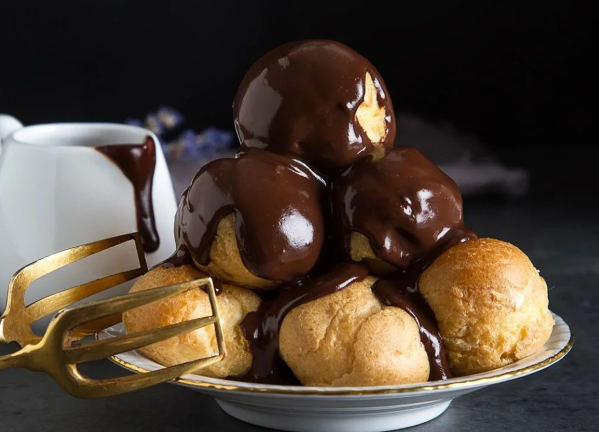

Profiterol Tarifi
8-10 kisilik
20 dk Hazirlik, 45dk Pisirme
Malzemeler:
- 1 su bardağı su
- 1 su bardağı un
- 125 gr tereyağı veya margarin
- 3 adet yumurta (yumurtalar küçük ise 4 adet)
Kreması için:
- 2,5 su bardağı süt
- 3 yemek kaşığı un
- 1,5 çay bardağı şeker
- 1 adet yumurta
- 1 paket vanilya
Sosu için:
- 1 paket hazır çikolata sosu ya da benmari usulü eritilmiş 80 gr bitter çikolata

Profiterol Tarifi Nasıl Yapılır.
- İlk olarak profiterolün hamurunu hazırlayalım. Küçük bir tencereye 1 su bardağı suyu ve margarini koyarak kaynatın. Daha sonra 1 su bardağı unu ekleyerek iyice karıştırın.
2-3 dakika karışımı sürekli karıştırarak pişirin. Ocağı kapatarak 10-15 dakika hamurun soğumasını bekleyin.
Hamur biraz dinlendikten sonra 3 adet yumurtayı hamura yedirmemiz gerekiyor ancak bu noktada önemli bir ayrıntı var.
Yumurtaları teker teker hamura kırın ve birini iyice yedirmeden diğer yumurtayı kırmayın.
Yumurtaları hamura iyice yedirdikten sonra yapışkan bir hamur elde etmiş olduk.
Bu kısım biraz yorucu oluyor ama hamurun kabarması için iyice karıştırmış olmanız gerekiyor.
Yumurtaları yedirdikten sonra hamuru 10 dakika dinlendirin.
- Hamurlarımızı pişirelim. Yağlanmış tepsiye, kaşık yardımı ile hamurdan ceviz büyüklüğünde parçalar alarak aralarında 2-3 cm boşluk bulunmasına dikkat ederek resimdeki gibi dökün. Elinizle şekillendirmeye çalışmayın. Daha önceden 180 derecede ısıttığımız fırına hamuru sürün. üzeri kızarana kadar yaklaşık 40 dakika pişiriyorsunuz.
- Profiterol Kremasını hazırlayalım. Hamurlar piştikten sonra kremasını hazırlayın. Vanilya hariç diğer malzemeleri bir tencereye koyarak kremayı pişirin. Kremayı ocaktan aldıktan sonra vanilyasını ekleyerek karıştırın.
- Kremayı profiterol hamurlarına dolduralım. Profiterolün pişen hamurlarını ikiye bölerek ya da varsa krema sıkma torbası ile içlerini krema ile doldurun ve tepsiye dizin.
- Tatlımızın üzerine çikolata sosu gezdirelim. Tüm profiterolleri doldurduktan sonra üzerine çikolata sosunu ya da benmari usulü erittiğiniz çikolatayı gezdirin.
Profiterol Tarifi Püf Noktaları.
- Profiterol yaparken en çok dikkat edilmesi gereken nokta yumurtaların güzel bir şekilde yedirilmesidir.
- Yumurtaları yedirirken hamurun soğumuş olmasına ve yumurtayı teker teker kırdıktan sonra her birinin güzel bir şekilde yedirilmesine dikkat etmelisiniz.
- Kremayı doldururken ılık olmalıdır.Çok cıvık olmaması gerekmektedir.
- Benmari usulü çikolatayı ısıya dayanıklı bir kaba koyarak kabınızı kaynamakta olan suyun içine koyuyorsunuz.
Çikolata su ile temas etmeyecek şekilde. Çikolata sıcak sudan aldığı ısı ile eriyecektir.